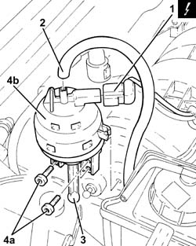
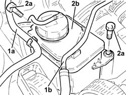
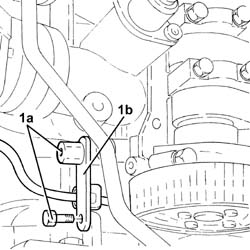
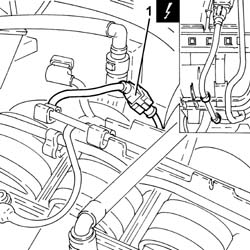
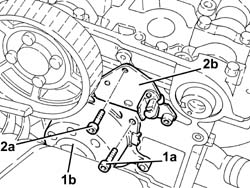
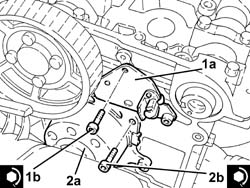

1056F51 Cam angle SENSOR - R.R.
- Path
- Procedures > 10 ENGINE > 1056 PETROL INJECTION SYSTEM > 1056F DIRECT PETROL INJECTION SYSTEM > 1056F51 Cam angle SENSOR - R.R.
- Kind
- repair procedure (removal / refitting; the operation number is the code)
- Applies to
- engines: 2.0 JTS, 2.0 JTS; all production periods
- Interactive page
- https://sloeber94.github.io/elrnDB-a156/en/#/3237734
Applies to: engines: 2.0 JTS, 2.0 JTS; all production periods
 Removing
Removing
 Refitting
RefittingPosition the vehicle on the ramp.
Ensure that the ignition key is in the OFF position, then disconnect the negative battery terminal (-).
 | Name | Connector |
|---|---|---|
- | Battery |
Proceed with removal 4450B04 right front wheel r r .
Proceed with removal 7055B54 under-engine guard - r r .
Proceed with removal 1016A40 ignition coil cover on cylinder head- r+r .
Proceed with removal 1032B10 toothed timing belt - r + r for timing adjustment or replacement .
Proceed with removal 1032B52 toothed driven pulley (one) - r + r (Left side).
1. Disconnect the electrical connection from the enablement solenoid of the changeover device actuator.
| Name | Connector |
|---|---|---|
1 | Variable geometry control solenoid |
2. Disconnect the vacuum intake pipe from the air flow switching device actuator and release it from the fastening.
3. Disconnect the linkage for the air flow switching cotrol actuator.
4. Undo the bolts (4a) and remove the air flow switching control actuator (4b).

Applies to: engines: 2.0 JTS, 2.0 JTS; all production periods
1. Release the fuel vapour recovery pipe (1a) and the coolant return pipe to the coolant reservoir (1b) from the attachments on the power steering fluid reservoir.
2. Undo the bolts (2a) and move aside the power steering fluid reservoir (2b).

Applies to: engines: 2.0 JTS, 2.0 JTS; all production periods
1. Undo the bolts (1a) and remove the bracket (1b) after releasing the electrical wiring from the cam angle sensor.

Applies to: engines: 2.0 JTS, 2.0 JTS; all production periods
1. Disconnect the electrical connection for the cam angle sensor and release the wiring from the fastening on the modular intake manifold.
| Name | Connector |
|---|---|---|
1 | Timing sensor |

Applies to: engines: 2.0 JTS, 2.0 JTS; all production periods
Disconnect the lower coolant outlet hose from the radiator and drain the engine coolant.
1. Undo the bolts (1a) and remove the water pump (1b) complete with O-ring.
2. Undo bolts (2a) and remove the timing sensor (2b).

Applies to: engines: 2.0 JTS, 2.0 JTS; all production periods
Refitting
Removing1. Place the timing sensor (1a) in its seating and secure it with its bolts (1b) to the specified torque.
 | Fastening | Component | Ø | Value (daNm) |
|---|---|---|---|---|
1b | Bolt | CAMSHAFT.MPI. ( CAM ANGLE SENSOR) | M6 | (Cylinder head side) 0.8 ÷ 1.0 |
2. Refit the water pump (2a), complete with O-ring, back in its housing and tighten the bolts (2b) to the specified torque.
| Fastening | Component | Ø | Value (daNm) |
|---|---|---|---|---|
2b | Bolt | COOLANT PUMP | M8 | (Cylinder head side) 2.3 ÷ 2.8 |

Applies to: engines: 2.0 JTS, 2.0 JTS; all production periods
Connect the electrical connection for the cam angle sensor and fix the electrical wiring to the fastening on the modular intake manifold.
Refit the bracket in its seating and secure it using the bolts, then secure the cam angle sensor's wiring to its band.
Refit in its seating the power steering fluid reservoir and secure it with its bolts.
Secure the fuel vapour recovery pipe and coolant return pipe to the coolant reservoir to the attachments on the power steering fluid reservoir.
Fit the air flow switching device actuator in its seating and secure it using the bolts.
Connect the linkage for the air flow switching control actuator.
Connect the air flow switching control actuator vacuum intake pipe and fasten it to the device with a band.
Connect the electrical connection from the enablement solenoid of the changeover device actuator.
Proceed with refitting 1032B52 toothed driven pulley (one) - r + r (Exhaust side).
Proceed with refitting 1032B10 toothed timing belt - r + r for timing adjustment or replacement .
Proceed with refitting 1016A40 ignition coil cover on cylinder head- r+r .
Proceed with refitting 7055B54 under-engine guard - r r .
Proceed with refitting 4450B04 right front wheel r r .
Connect the negative (-) battery terminal.
Refill the engine cooling system with coolant 0010T20 coolant change .
Remove the car from the ramps.
Topics linked from this page (9)
- 0010T20 coolant change
- 1016A40 ignition coil cover on cylinder head- r+r
- 1032B10 toothed timing belt - r + r for timing adjustment or replacement
- 1032B52 toothed driven pulley (one) - r + r
- 4450B04 right front wheel r r
- 7055B54 under-engine guard - r r
- A1B Battery ( BATTERY NEGATIVE )
- K47 Timing sensor
- L15 Variable geometry control solenoid